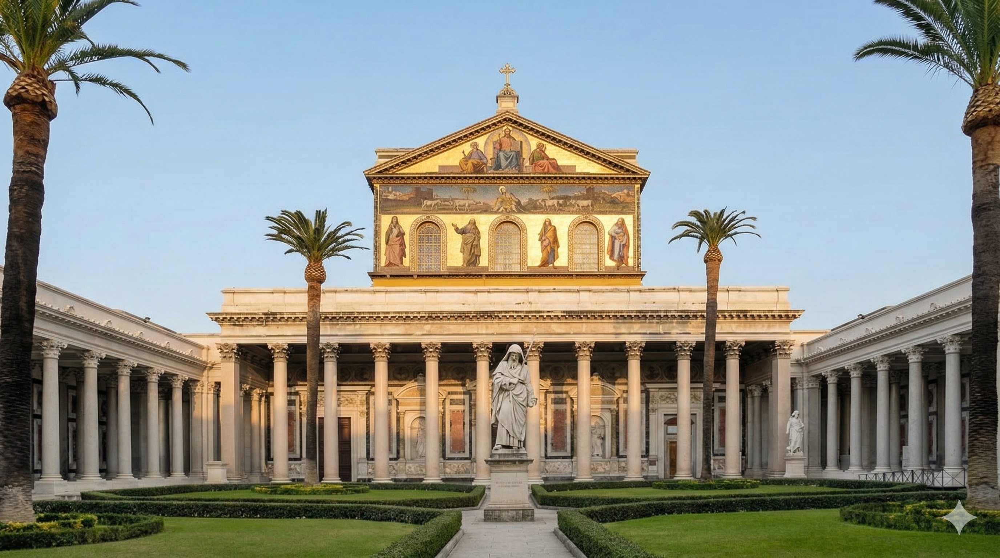
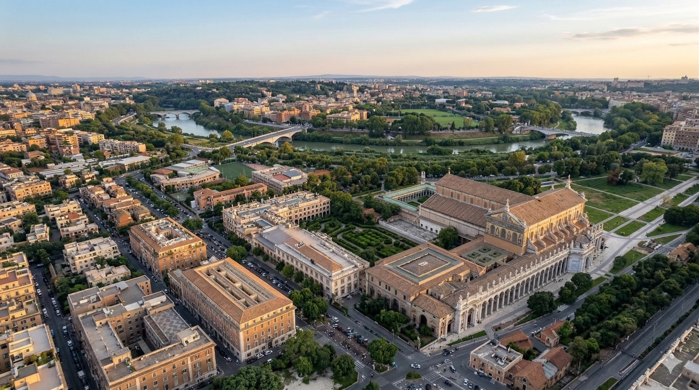
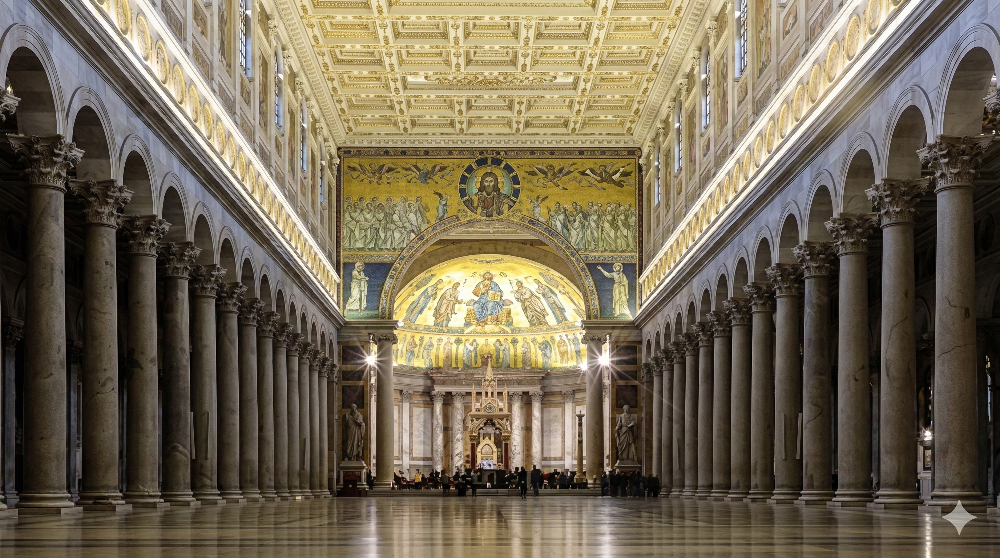
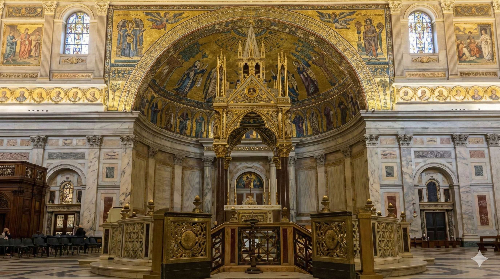
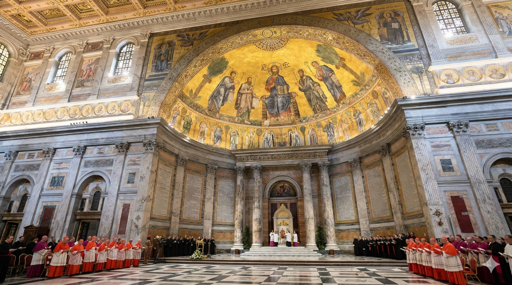

✕
❮
❯





A Basílica de São Paulo Fora dos Muros foi originalmente construída no século IV por ordem do imperador Constantino. A igreja foi erguida sobre o local onde, segundo a tradição cristã, estava o túmulo do apóstolo Paulo. Durante o reinado do imperador Teodósio o templo foi ampliado e transformado em uma das maiores igrejas do mundo cristão. Em 1823 um incêndio devastador destruiu grande parte da basílica medieval. A reconstrução posterior seguiu o modelo arquitetônico original, preservando o estilo monumental da igreja. Hoje o edifício apresenta uma impressionante sequência de colunas e amplos corredores que refletem a grandiosidade da arquitetura religiosa romana.
O local onde a basílica foi construída é tradicionalmente associado ao sepultamento do apóstolo Paulo, martirizado em Roma durante as perseguições do imperador Nero no século I. A presença desse túmulo tornou o templo um dos principais centros de peregrinação do cristianismo. Durante séculos fiéis visitaram o local para rezar junto ao altar erguido sobre o sepulcro do apóstolo. A igreja também desempenhou papel importante nas cerimônias papais e na vida religiosa da cidade de Roma. Até hoje a basílica permanece como um símbolo da missão apostólica de São Paulo e de sua influência na expansão do cristianismo.
Curiosidade histórica:
Dentro da basílica existe uma sequência de medalhões com retratos de todos os papas da história da Igreja, iniciando com São Pedro e continuando até os pontífices atuais.
Cultura pop:
A história do apóstolo Paulo e dos primeiros cristãos de Roma é retratada no filme bíblico "Paul, Apostle of Christ" (2018).